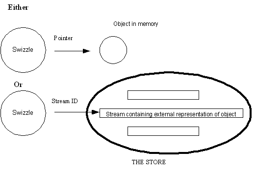

|
| |
In complex applications involving a large network of objects, it may be desirable, and even necessary, to defer the loading of objects into memory from the store.
It should, therefore, be possible to represent such an object in one of two ways:
by the stream ID of the stream containing the external representation of that object, if it is not in memory.
by a pointer, if it is in memory (or has already been loaded into memory); the pointer points to the in-memory object.
A Swizzle is a device for handling this dual representation.
A typical container type object, therefore, does not have a pointer directly to a contained object, but has a Swizzle which can represent that contained object either as a pointer or as a stream ID, as illustrated in the following diagram.

A Swizzle can be considered as a lean, but efficient, container in its own right.
The concrete Swizzle classes are templated; the template parameter defines the type of object which the Swizzle represents.
There are two general concrete Swizzle classes:
TSwizzle<class T>
TSwizzleC<class T>
A TSwizzle<class T> represents a
<class T> type object. Full access is available to
the <class T> type object through the
Swizzle.
A TSwizzleC<class T> represents a
<class T> type object. Access to the object is
limited; in particular the object cannot be changed.
Copyright ©2002 Symbian Ltd. 6.1-00174 |
|